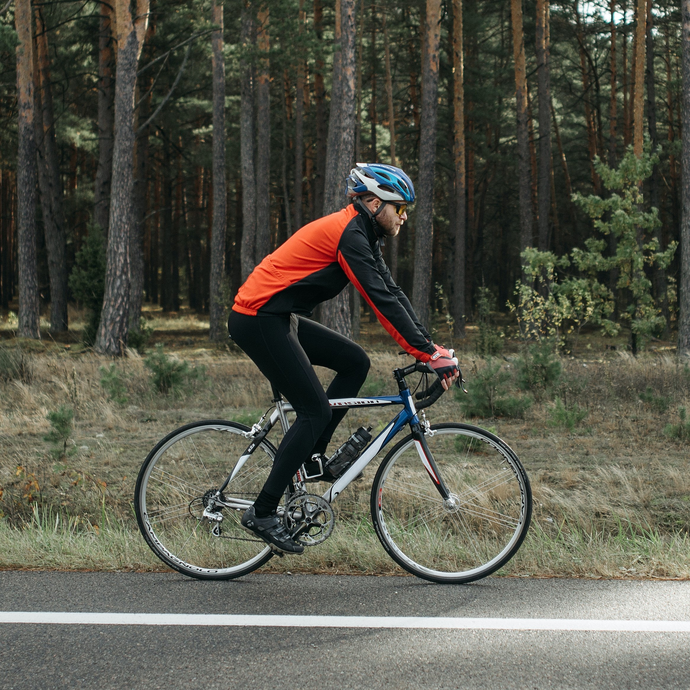
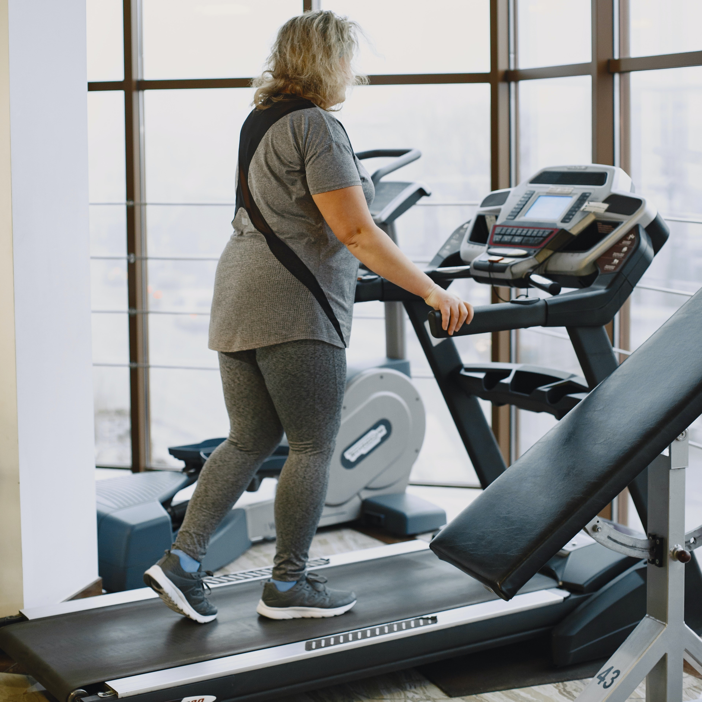
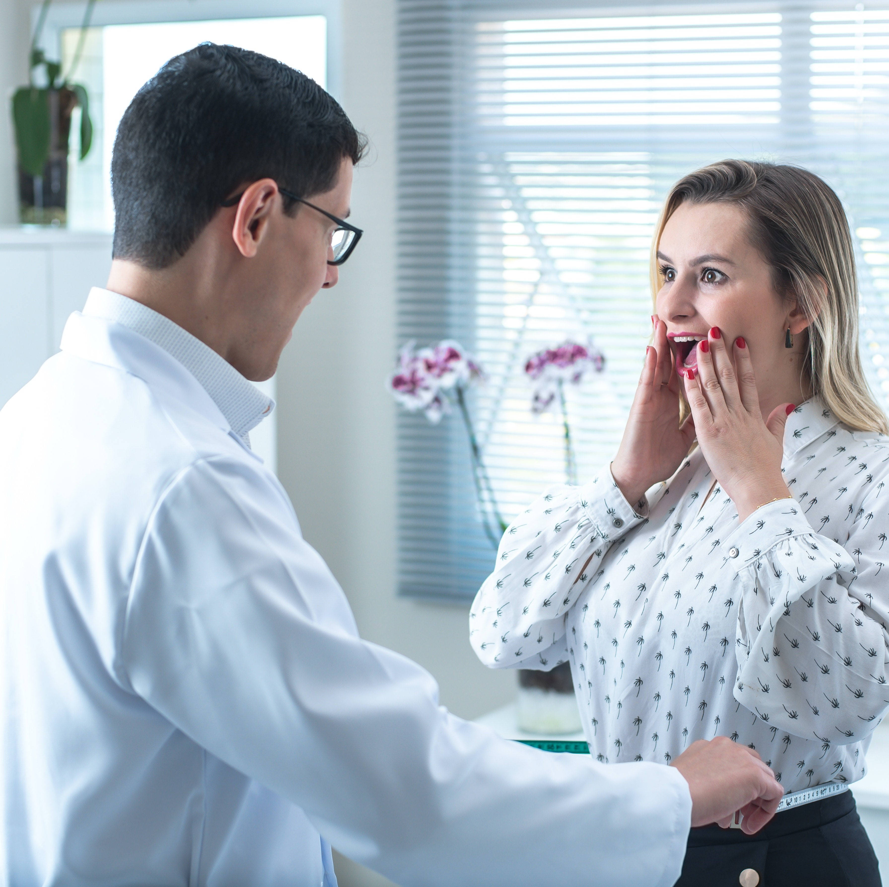
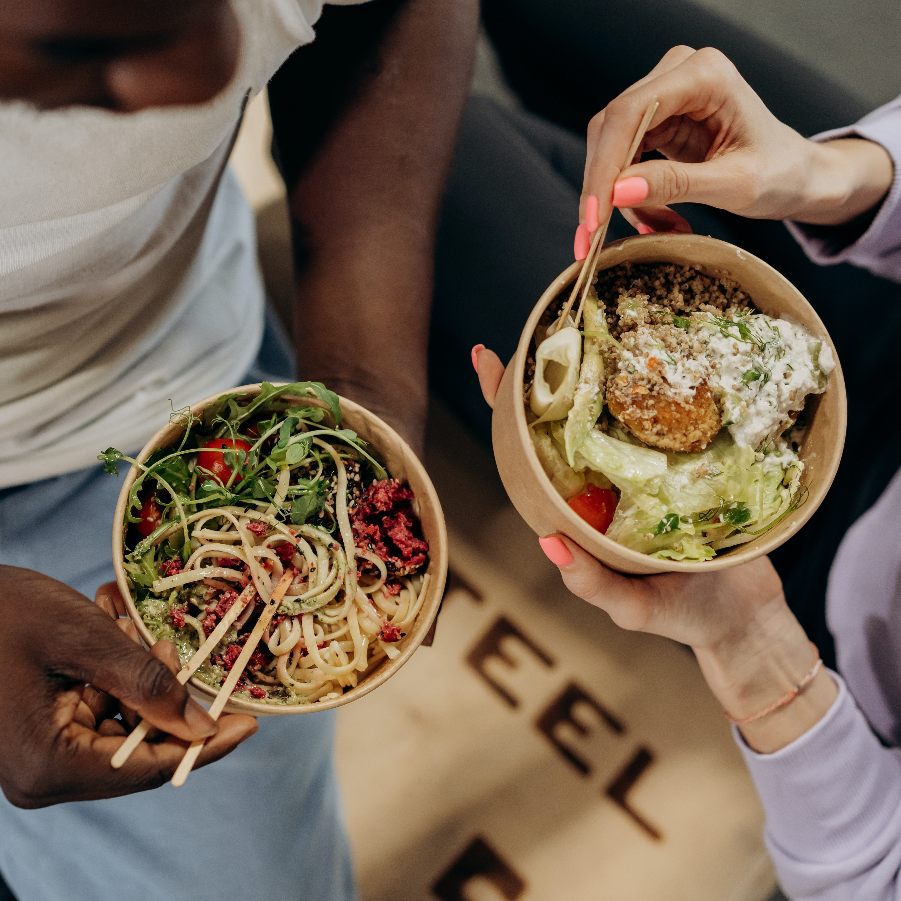

Find Out The Healthy Way To Lose Weight
The best way to lose weight is to choose an all-round healthy lifestyle – from diet to sleep quality – and that includes low, medium or high intensity physical activity.
How to lose weight: 6 tips to lose weight to combine with diet and physical activity:
The Facts
According to the WHO, 41% of Europeans do not engage in any type of physical activity, but they are not the only ones: the entire Western population and beyond is involved in a global epidemic that also has a name, globosity.
The World Health Organization estimates that obesity globally has tripled since 1975 and that since 2016 more than 1.9 billion adults on the planet are overweight – and of these, 650 million are seriously overweight – an epidemic that does not spare the youngest, with over 340 million children and adolescents between the ages of 5 and 19 deemed overweight.
To cure this epidemic, everyone can do their part and there is an apparently simple solution: lose weight. But what is the best way to lose weight?
There is no need to go around it, there are two ways: to intervene on the diet and physical activity we carry out, and in this guide we will see how. Also because losing weight with a correct diet, in addition to doing us good and making us feel better, is also good for the planet: since caloric foods produce more emissions, requiring more water and more land to be produced.
Last point of this premise with regards to nutrition: in addition to the advice on the best way to lose weight contained in this guide, it is necessary to take into account that the diet is like a tailored suit and must be modeled on the characteristics of the person. Taking into account his medical history, his life habits, his sporting habits, his tastes and even his vices, and must be adapted over time.
Do-it-yourself is to be avoided, as are the promises of miraculous and too quick results. There are no shortcuts: consulting a specialist doctor is the best way to really start losing weight, along with practicing more physical activity. And also read this guide.
What is the best way to lose weight?
Before discovering what is the best way to lose weight, it is necessary to understand how to lose weight: how do we lose weight? We lose weight – in a healthy way – when there is a negative calorie balance.
The negative calorie balance is the product of a very simple relationship: if the calories we spend are greater than those we accumulate at that point, the calorie balance is negative. A negative caloric balance in turn leads to a reduction of adipose fat because it triggers lipolysis and the consequent cellular lipid consumption.
For this reason, nutrition is very important for losing weight and together with physical activity it is the best way to lose weight. Nutrition for which it is essential for one’s health to avoid do-it-yourself, the shakes seen on Instagram, the diets found on Google, the apps, the advice of friends, but it is necessary to rely on a specialized doctor.
Only at that point can we think of combining even more physical activity, whether it is at low, medium or high intensity, and we will see it in detail later.
We lose weight – in a healthy way – when there is a negative calorie balance.
To lose weight we can therefore take action on two fronts to lose weight: the first front is nutrition, the second is the consumption of calories we consume. To consume more calories, the simplest solution is to take less and increase physical activity.
Physical activity does not necessarily mean aerobic activity: we can do a lot even by slightly changing our daily habits:
Giving up some of the comforts we are surrounded by can be a great start if we are starting from scratch.
Wanting to do something more to burn off the excess calories we take in – remember the negative calorie balance? – we can practice an aerobic resistance training – for example exercise bike, running, Nordic walking and much more – with high intensity peaks, as well as a high intensity anaerobic type training – also called HIIT, High Intensity Training – consequently all that is weightlifting or functional training.
Virtue, as in everything, lies in the middle, perhaps in a mix of the two forms of training, but above all in being advised by qualified personnel which path to take and avoid doing it alone, because you can’t go anywhere alone.
There are two ways to lose weight: eat less (and eat better) and exercise. There are no tricks or secrets, you just need motivation and the first small results will encourage us to continue. Wanting the list of small tips to motivate us and keep morale high and help us lose weight could be long, and we will see it now.
6 ways for fast weight loss:
Losing weight too fast is not a good idea, it hurts and all doctors advise against it. Also because it is not about lasting weight loss but an illusion: because we do not lose visceral fat, but anything else, whether it is liquid, muscle, or otherwise. However, there are a number of small tricks, suggested by the NHS – the British health system – that if we start from scratch and want to lose weight, they can help us optimize results. Always choosing the correct diet and practicing physical activity regularly.
1. Don’t skip breakfast
Skipping breakfast is useless, on the contrary, it can lead us to eat snacks to avoid during the morning. Breakfast should be made, not necessarily in a continental style, even in the Italian style with a coffee and a brioche and then interspersed with micro-meals in the morning.
2. Don’t skip mealsIf skipping breakfast is wrong, skipping meals is an even bigger mistake if we want to lose weight. Fasting for lunch or dinner is a harmful and self-punishing measure that is absolutely useless.
3. Exercise
We said it a little while ago: the important thing is to burn more calories than we enter our body and a great way to do this is to move. Get moving. Going from simple movement to low, medium or high intensity activity is of course a good idea.
4. No alcohol
Anything alcoholic should be avoided. Alcoholic beverages are a concentrate of calories in all forms, be it beer, wine or spirits. To be sure not to exceed in calories, therefore, an excellent solution is to minimize beer, wine and more. Or eliminate them.
5. Use a smaller plate
Eating on a smaller plate when we are at home or on our lunch break at the office will make us smaller portions. Smaller portions equate to fewer calories ingested, making it easier to achieve negative calorie balance.
6. Drink lots of water
Water can also help with weight loss since it reduces calories in the body (not fat) , if it is consumed as a result of cheating on sweets, alcohol or too salty products because it allows the water retained by the latter to be eliminated in turn. Furthermore, drinking it before meals can help prevent overeating by creating a sense of satiety. Water is a fundamental component of our body, and proper hydration, associated with good nutrition, is very important for staying healthy. But what are the real benefits of water and how much should we take daily? Water also helps our Muscles and joints, as well as bones, allow us to stand, move and carry out all daily activities.About 70-75% of the muscle is made up of water which allows the muscle to carry out its motor activities. In particular, in numerous scientific studies carried out on professional footballers, it appeared that the level of hydration is directly proportional to the performance itself. Water is a great friend of the human body, and more: it helps us lose weight in a healthy way.
What are the best exercises to lose weight?
We have reviewed some tips for losing weight by intervening on nutrition to achieve a negative calorie balance. Now we come to exercises and physical activity: if the goal is to lose fat tissue – because weight = visceral fat tissue – the methods by which we can do this are mainly two:
Low intensity activity
The first is the classic and best known one: practicing a long-lasting and low-intensity activity. In this case, after 20, 30 minutes of activity we will begin to selectively consume fats. For example, after an hour of walking, or an hour of low-intensity cycling, fitwalking or Nordic walking, we will know that from 20/30 minutes onwards we will have selectively consumed fats.
Medium or high intensity activity
The second system for losing fat is very effective and can be performed easily even if not trained, as long as we do it correctly. By doing about 20 seconds of medium-intensity exercise – on the bench, on the treadmill, walking, swimming – we consume muscle energy, which is so-called ready-to-use energy. If after 20 seconds of activity we stop completely – without doing any kind of active recovery – the body resynthesizes this ready-to-use energy by selectively consuming fats.
If we wanted to selectively lose fat then what could we do? Two or three times a week in the gym with the tools we alternate: 20 seconds of activity with 20 seconds of rest, all for half an hour.
Then 20 minutes at low intensity, which we can do on the bench press, the treadmill or any cardio training equipment.
During the weekend we could then take the time for a couple of hours of walking or cycling, but at a very slow pace.
In this way – walking or cycling – we practice another activity with which to selectively burn fat, reaching a negative calorie balance.
What does a dietician recommend?
According to Dr. Francesco Confalonieri, who specializes in Sports Medicine at the Santagostino Medical Center in Milan, the most effective way to lose weight is to eat less or eat better: if we want to lose weight, we cannot ignore following correct eating habits. Physical exercise can then be used for three reasons:
Especially the last of the three points is important because losing weight, in itself, means nothing: to lose weight you need to lose fat, not generally weight, and this is the first reasoning to do. There are not only five ways to lose weight quickly, it is very important to specify it: and, first of all, if there is something wrong, it is wanting to lose weight quickly. Because any dietary approach that promises to lose weight quickly at best – beyond the damage and side effects it can create – significantly inhibits and blocks metabolism.
So what happens at that point?
When I start eating normally – or even a little – I regain the weight I lost previously with interest.
Losing fat mass
I don’t have to lose weight generically, I have to lose fat, and not only that, I have to lose visceral fat, which is still different. To lose weight, a diet combined with exercise must be aimed at losing visceral fat. It is not possible to lose that much visceral fat in a week, that must be very clear.
An example: a diet that works very well – and I am not talking about severely or pathologically obese subjects, but overweight subjects in normal conditions – allows at best to lose one kg per week. For subjects who are heavily overweight, it can reach a kilo and a half a week: but it is already a lot, if I want this loss to be stable.
To lose weight, the goal of a diet coupled with exercise must be: to lose visceral fat
1. First advice Each person’s needs are individual
Consequently we cannot make diets with quantities that are the same for everyone, because each of us has his own consumption.
That said, from the point of view of nutrition it is essential to alternate the different types of nutrients as much as possible. As a basic rule – and subject to particular conditions – no nutrient taken less than twice a week is bad for you and any nutrient taken more than twice a week is likely to be bad. Example: I take milk or yogurt in the morning, but not every morning, so I alternate dairy products with soy milk and oat milk. At midday I eat carbohydrates to give energy to the body, but I try to alternate foods: I alternate 00 flour with wholemeal flour, and perhaps with spelled, barley, couscous. In the evening, however, I must strictly avoid carbohydrates and have a dinner that is exclusively protein, but I have to alternate different types of proteins. So red meat, white meat – preferably fish – eggs, legumes, lean sliced, goat’s or sheep’s cheese. The more I alternate, the more peaceful I am.
2. Second concept: I favour carbohydrates in the first half of the day and proteins in the second half of the day
Carbohydrates in the first half of the day are a powerful metabolism accelerator and I consume them because I move – and above all I do sports – while in the evening the body needs proteins because it has to maintain tissues, organs, muscles, bones, healthy, especially when the body is less young.
3. Third concept: I try to have more meals a day than the three classics
It doesn’t mean that I have to go crazy having a big breakfast – the average European doesn’t like a big breakfast, wakes up at the last minute and goes to work or to the bar for coffee and croissants – but I try to make at least two micro steps in the morning, or one when I wake up and one in the middle of the morning, alternating between carbohydrates and proteins. Then I have my lunch, in the afternoon I have a snack ideally based on seasonal fruit – so I eat fruit between meals – and then as we said I have an almost exclusively protein dinner.